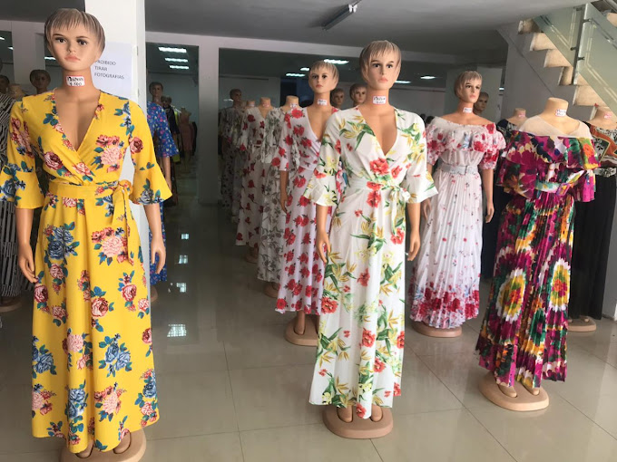

moda é uma linguagem não-verbal poderosa. Através das roupas, cores, estilos e acessórios, as pessoas comunicam.
As tendências de moda feminina atual incluem estilos como minimalismo, peças com texturas sintéticas e metálicas, e retorno do estilo retrô. No vestuário, peças como calças de modelagem wide leg e flare, coletes de alfaiataria, e a tendência "all jeans" são populares. Para o inverno, casacos longos e coloridos, assim como peças em tricô e lã, também estão em alta.
